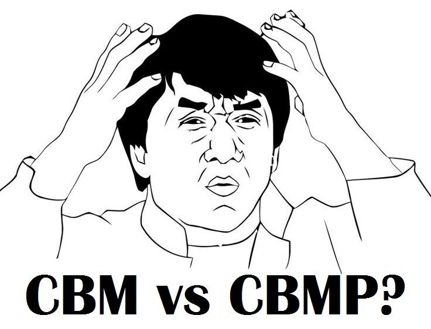

CBM and CBMP Explained
16 March 2016
A special thanks to Babs Tz for proposing this idea on .
There is a lot of misinformation, particularly among newcomers, about what exactly CBM and CBMP are. The truth is much simpler than it is often made out to be, and so today we are going to break these two daunting terms down in a way that is easy to understand, and that will allow you to understand where they occur in your dancing.
What is CBM?
CBM stands for Contra Body Movement. It is defined concisely by the ISTD Ballroom Technique as follows:
A body action. The turning of the opposite side of the body toward the moving foot, which is moving forward or back, generally to initiate turn.
When you are stepping forward with your right foot and you rotate your left side forward (as in any turn to the right or natural figure), that is CBM. The same is true on the left, and the same is true when going backward. CBM is a rotation of the body to generate turn. When it is described technically, it seems like a lot of information, but really there is no other way to turn. Can you step forward with your right foot and turn to the right in any other way? I don't think so.
Here are all the possible ways you can generate CBM:
| 1 | Step forward on the RF, turn to the R (as in Man's 1-3 of Natural Turn) |
| 2 | Step forward on the LF, turn to the L (as in Man's 1-3 of Reverse Turn) |
| 3 | Step back on the RF, turn to the L (as in Lady's 1-3 of Reverse Turn) |
| 4 | Step back on the LF, turn to the R (as in Lady's 1-3 of Natural Turn) |
And that's it! That's all there is to CBM.
What is CBMP?
CBMP stands for Contra Body Movement Position. Let's look again at the definition:
A foot position where the foot is placed on or across the line of the supporting foot, either in front or behind, to maintain body line.
If you drew a thin line down the room and then stood with your feet on either side, your feet would stay on either side of that line as you walk. However, when you walk with both feet on the line, as if walking on a tight rope, that position is called CBMP. Likewise, if you were to cross one foot in front of the other, that position is also called CBMP (often called across in CBMP).
This is really all CBMP is:
| 1 | If your feet are in one line, you are in CBMP |
| 2 | If your feet are crossed beyond the point where they would be in line, you are in CBMP (specifically, you are across in CBMP) |
There are two ways to achieve CBMP. The first way is to step in line or across yourself. If you do this, you have stepped into CBMP, as shown in the image above. The second way is to step normally and then rotate. Let's say you step forward with your left foot, and then rotate 1/8 to the left, swivelling the feet on the balls, turning the hips, shoulders, and entire body, but not moving the position of the balls of the feet. Look at your feet, and they should be in CBMP, meaning you have rotated into CBMP.
CBMP is primarily used in Standard whenever you or your partner steps Outside Partner, whenever your inside foot steps forward in Promenade Position or your outside foot steps backward in Fallaway Position. Although it also occurs some other times, these make up the vast majority.
The Difference between CBM and CBMP
| CBM | CBMP | ||
| • | A movement | • | A position |
| • | Body turns, while hips and feet don't turn | • | Body, hips, and feet are all facing the same direction |
| • | Has to do with turning the body | • | Has to do with the relationship between the two feet |
| • | Used in turns to initiate rotation | • | Used in Outside Partner, Promenade, Fallaway, and a few other places |
To put things simply, CBM is when you step forward or back with one foot, and rotate the opposite shoulder toward that foot, while CBMP is a position where both feet are in line or crossing lines. That's it! Don't think too hard about it!